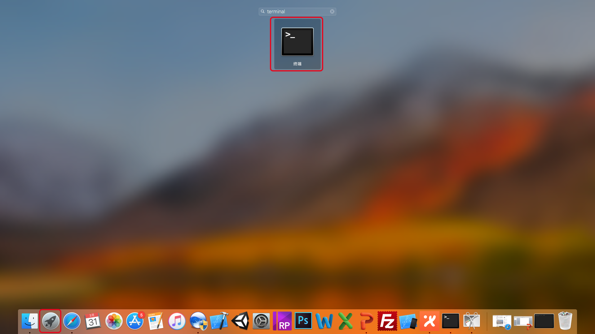
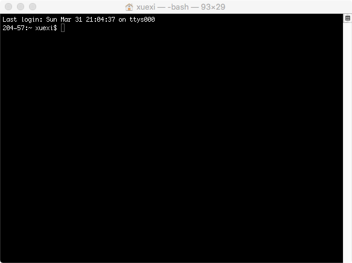

Linux command
Linux command can be executed on terminal, and here we will introduce some common commands, if you want to get more detailed tutorial, click here!
What is terminal?
It's a program called a terminal emulator. This is a program that opens a window and lets you interact with the commands. There are a many of different terminal emulators you can use.
Starting a terminal
On the Mac , please search "terminal" in the "Launchpad", and then double click it. (See the red box below).


Here are some common commands!
pwd
Print the absolute path of the directory you are working in using pwd command:

Every time you log in to the Linux system(or the Mac OS X systen) ,You are located in the home directory. On most systems, your home directory will be called "/home/your_user_name", but it can be anything according to the assignment of the system administrator. To list the files in the working directory, use the ls command:

cd
You can use cd command to change your working directory:

cd pathname
Type cd followed by a pathname will change the working directory to the specific pathname. The "." notation in pathname refers to the working directory itself and the ".." notation in pathname refers to the working directory's parent directory:

mkdir
Make a new directory .

touch
Create a new file .

rm
Remove files or directories.

Or move files and directories to another location.

scp
scp is the abbreviation of secure copy, scp is a secure remote file copy command based on ssh login under Linux system.
a. Copy from local to remote: $ scp local_file remote_username@remote_ip:remote_folder
Copy directory: $ scp -r local_folder remote_username@remote_ip:remote_folder
b. Copy from remote to local: $scp remote_username@remote_ip:remote_folder/remote_file local_folder
In the example below, we first created a file named "test.txt" and then copy it to the /home/xcwang/ directory of the remote host with IP address 218.199.68.187.

On the remote host, we can find the file we just copied.

Now, let's do a practice.
In the home directory, We create a folder named "course" with command "mkdir course", and move the "protein.pdb" to the folder with command "mv protein.pdb ./course". And then we change working directory with command "cd course". And now,we rename the "protein.pdb" file to "Protein.pdb" with command "mv protein.pdb Protein.pdb".
What we should know is that the Linux command "mv" has two functions, moving files to other location or rename them.